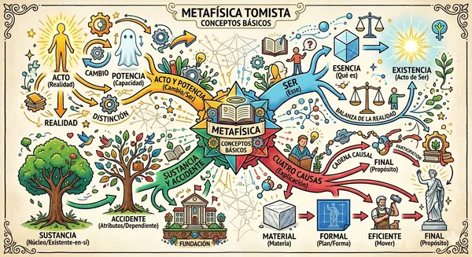
VISOR · ZOOMMetafísica
Metafísica tomista: conceptos básicos
Panorama de los conceptos fundamentales de la metafísica de Santo Tomás.
ABRIR MAPA →La fe busca entender, y entender es ver el orden de las cosas: cómo cada verdad se sostiene en otra y todas conducen a Dios.
Estos mapas mentales presentan de un vistazo los grandes temas de la teología católica. Empezamos por el tomismo, con los fundamentos de la metafísica, y seguimos con la Escritura, Cristo, la apologética y la Iglesia.
Abre cualquier mapa para verlo a pantalla completa y acercarte a cada detalle.
Los fundamentos: acto y potencia, materia y forma, esencia y ser, sustancia y accidentes, causas y trascendentales.

VISOR · ZOOMPanorama de los conceptos fundamentales de la metafísica de Santo Tomás.
ABRIR MAPA →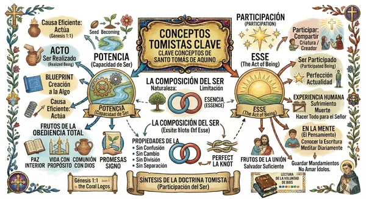
VISOR · ZOOMActo, potencia, esencia y esse: la composición del ser y la participación.
ABRIR MAPA →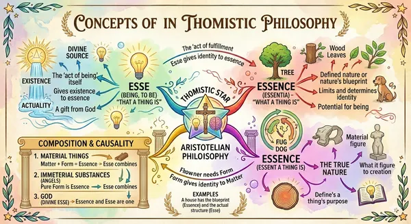
VISOR · ZOOMEsse, esencia, composición y causalidad en un solo vistazo.
ABRIR MAPA →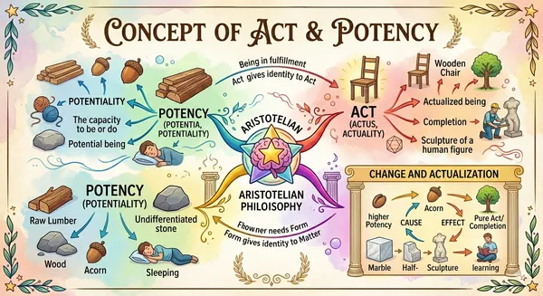
VISOR · ZOOMLa doctrina aristotélica del cambio: lo que puede ser y lo que ya es.
ABRIR MAPA →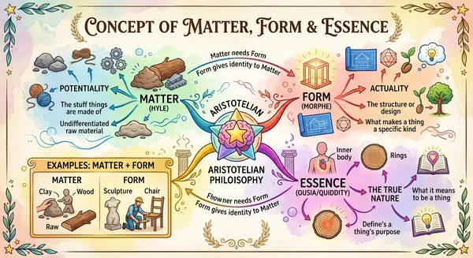
VISOR · ZOOMCómo la materia y la forma constituyen la esencia de las cosas.
ABRIR MAPA →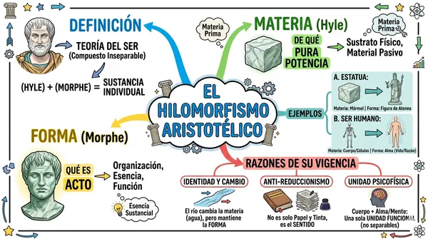
VISOR · ZOOMMateria prima y forma sustancial: definición, ejemplos y vigencia.
ABRIR MAPA →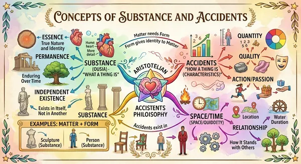
VISOR · ZOOMLo que una cosa es y lo que tiene: las categorías del ser.
ABRIR MAPA →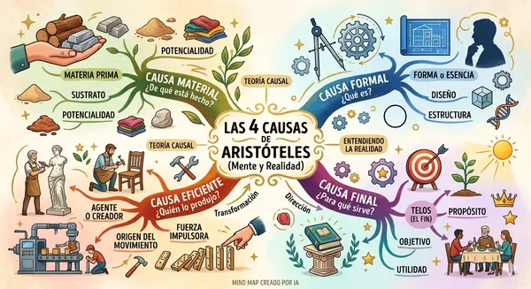
VISOR · ZOOM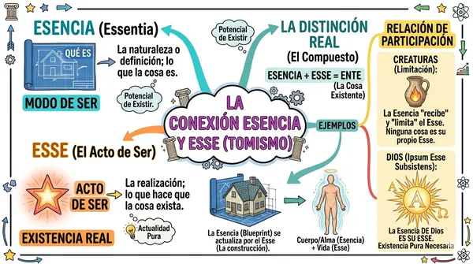
VISOR · ZOOMLa distinción real entre lo que una cosa es y su acto de ser.
ABRIR MAPA →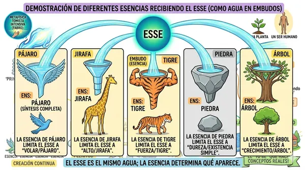
VISOR · ZOOMEl esse es la misma agua; la esencia determina la forma en que aparece.
ABRIR MAPA →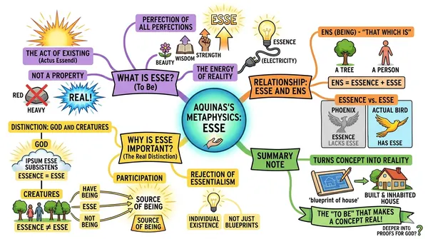
VISOR · ZOOMQué es el esse, por qué importa y cómo se distingue del ente.
ABRIR MAPA →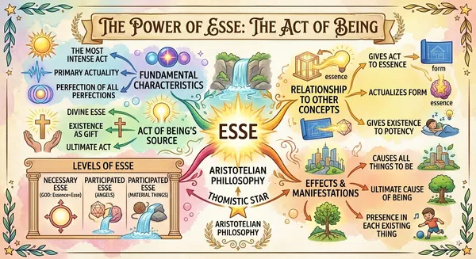
VISOR · ZOOMEl esse como acto de todos los actos y perfección de todas las perfecciones.
ABRIR MAPA →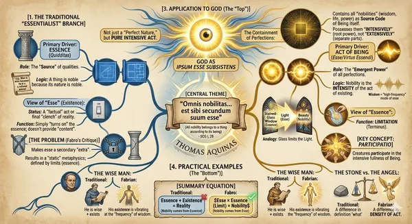
VISOR · ZOOMEl esse intensivo aplicado a Dios y a las criaturas.
ABRIR MAPA →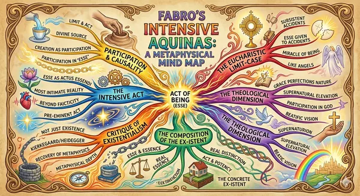
VISOR · ZOOMLa lectura de Cornelio Fabro: participación y acto de ser.
ABRIR MAPA →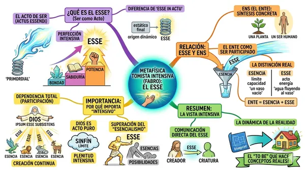
VISOR · ZOOMEl esse en acto, la distinción real y la dependencia de la criatura.
ABRIR MAPA →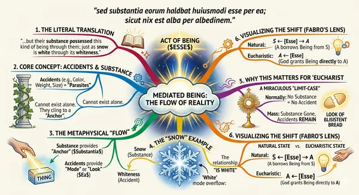
VISOR · ZOOMSustancia, accidentes y el esse, con su aplicación a la Eucaristía.
ABRIR MAPA →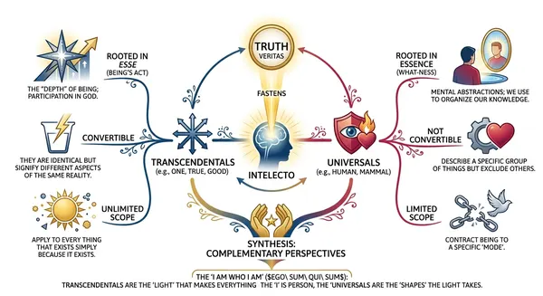
VISOR · ZOOMVerdad, bondad y unidad frente a los conceptos universales.
ABRIR MAPA →Dios, acto puro y ser subsistente, y el acto creador.
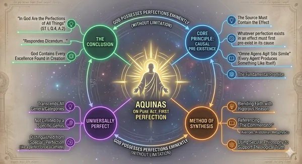
VISOR · ZOOMPor qué en Dios se encuentran todas las perfecciones sin límite.
ABRIR MAPA →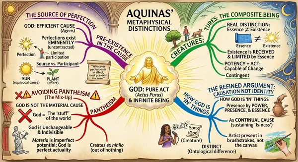
VISOR · ZOOMDistinciones metafísicas de Santo Tomás: causa, participación y panteísmo.
ABRIR MAPA →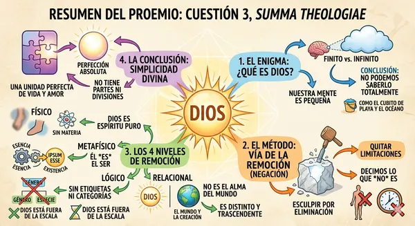
VISOR · ZOOMEl método de la remoción: conocer a Dios por lo que no es.
ABRIR MAPA →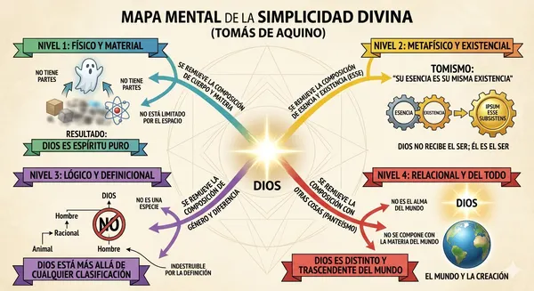
VISOR · ZOOMLos niveles de remoción: Dios no tiene partes ni composición.
ABRIR MAPA →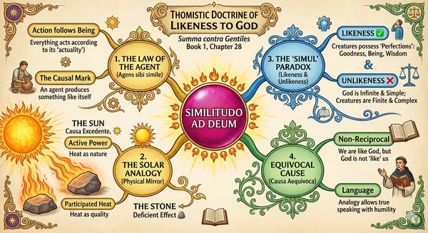
VISOR · ZOOMLa analogía: las criaturas se parecen a Dios, Dios no a ellas.
ABRIR MAPA →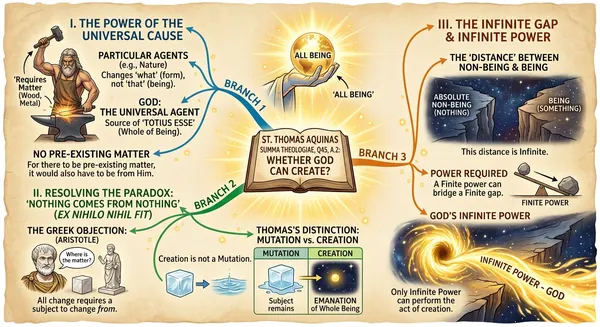
VISOR · ZOOMLa causa universal y la creación de la nada.
ABRIR MAPA →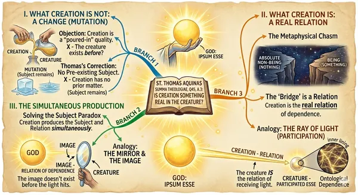
VISOR · ZOOMLa creación no es un cambio sino una relación real de dependencia.
ABRIR MAPA →La gracia como participación de la naturaleza divina, raíz de las virtudes.
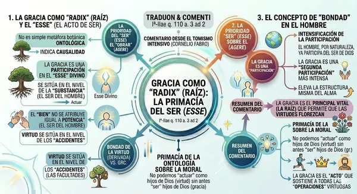
VISOR · ZOOMLa primacía del ser: la gracia en la esencia del alma (STh I-II, q. 110, a. 3).
ABRIR MAPA →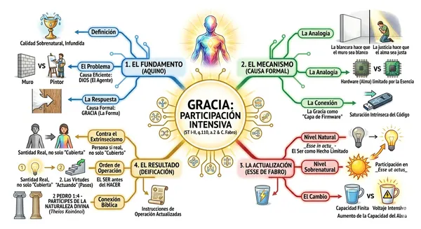
VISOR · ZOOMFundamento, mecanismo y resultado de la gracia como participación.
ABRIR MAPA →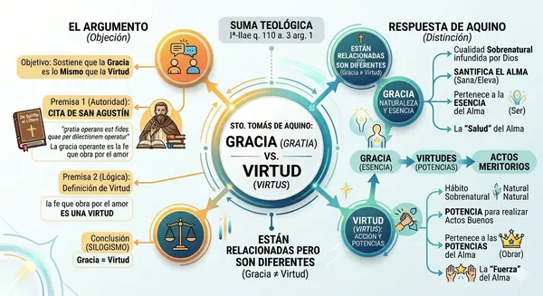
VISOR · ZOOM¿Es la gracia una virtud? La respuesta de Santo Tomás (STh I-II, q. 110, a. 3).
ABRIR MAPA →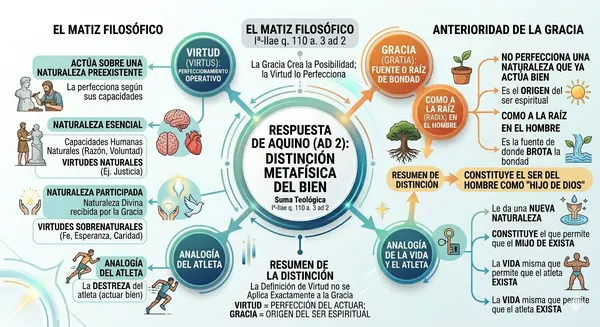
VISOR · ZOOMEl ad 2 de Santo Tomás y la anterioridad de la gracia.
ABRIR MAPA →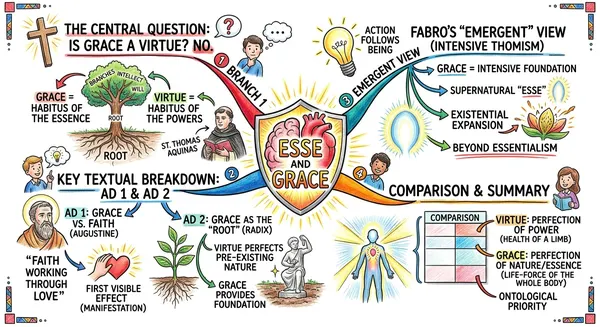
VISOR · ZOOMLa gracia como esse sobrenatural: la lectura del tomismo intensivo.
ABRIR MAPA →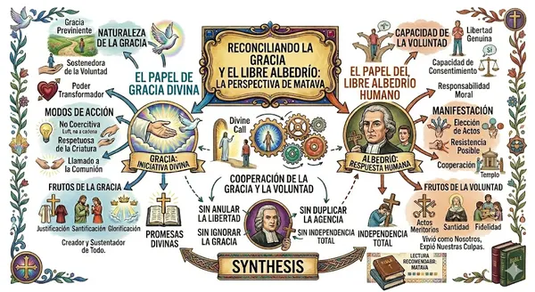
VISOR · ZOOMCómo cooperan la gracia divina y la libertad humana.
ABRIR MAPA →La Madre de Dios en la Escritura y en la fe de la Iglesia.
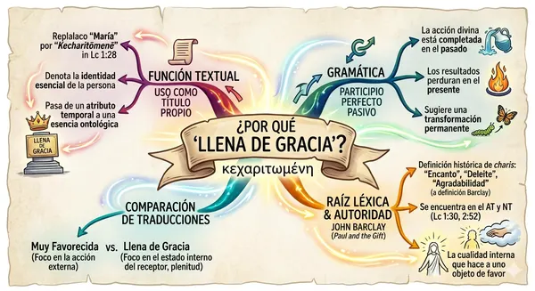
VISOR · ZOOMKecharitōmenē (Lc 1, 28): gramática, traducción y significado.
ABRIR MAPA →La Escritura leída en la unidad de la Revelación.
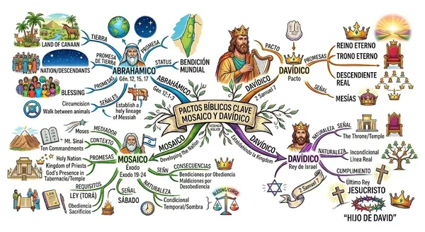
VISOR · ZOOMLos pactos abrahámico, mosaico y davídico, cumplidos en Cristo.
ABRIR MAPA →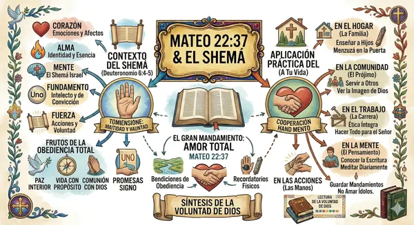
VISOR · ZOOMEl gran mandamiento: contexto del Shemá y aplicación práctica.
ABRIR MAPA →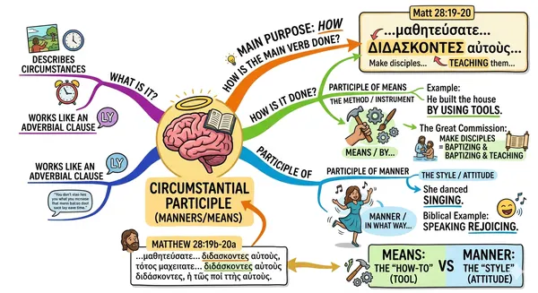
VISOR · ZOOMEl participio circunstancial en el griego de la Gran Comisión.
ABRIR MAPA →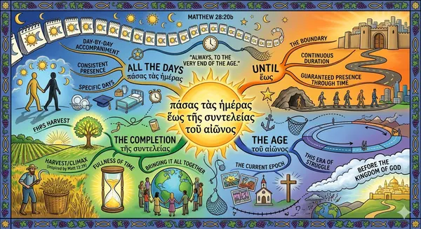
VISOR · ZOOMLa presencia de Cristo con su Iglesia hasta el fin del mundo.
ABRIR MAPA →El misterio de Cristo, verdadero Dios y verdadero hombre.
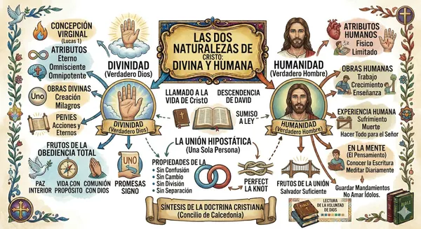
VISOR · ZOOMDivinidad, humanidad y unión hipostática según Calcedonia.
ABRIR MAPA →Razones de nuestra esperanza (1 Pe 3, 15).
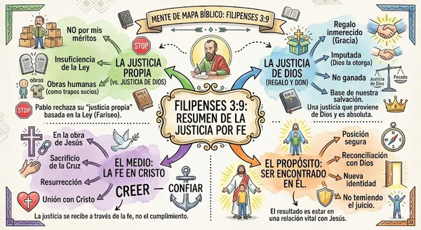
VISOR · ZOOMLa justicia que viene de Dios y no de la Ley.
ABRIR MAPA →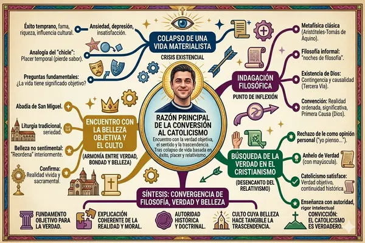
VISOR · ZOOMFilosofía, verdad y belleza convergen en la Iglesia.
ABRIR MAPA →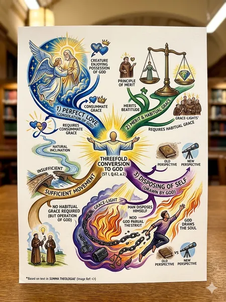
VISOR · ZOOMUna conversión intelectual, moral y espiritual hacia Dios.
ABRIR MAPA →La Iglesia, sacramento universal de salvación.
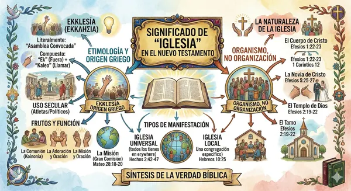
VISOR · ZOOMEkklesía: etimología, imágenes bíblicas y organismo, no organización.
ABRIR MAPA →Los documentos de la Iglesia explicados.